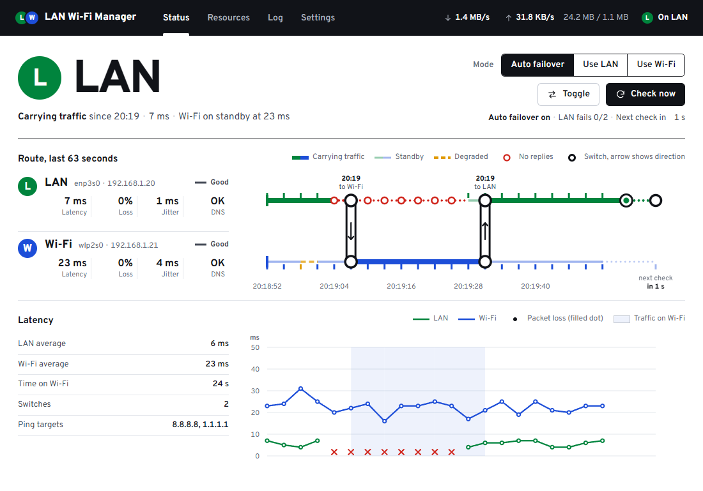
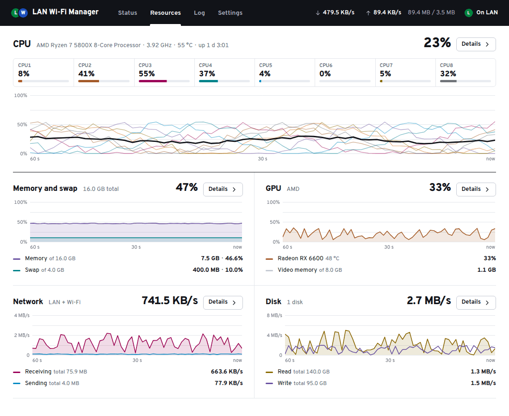
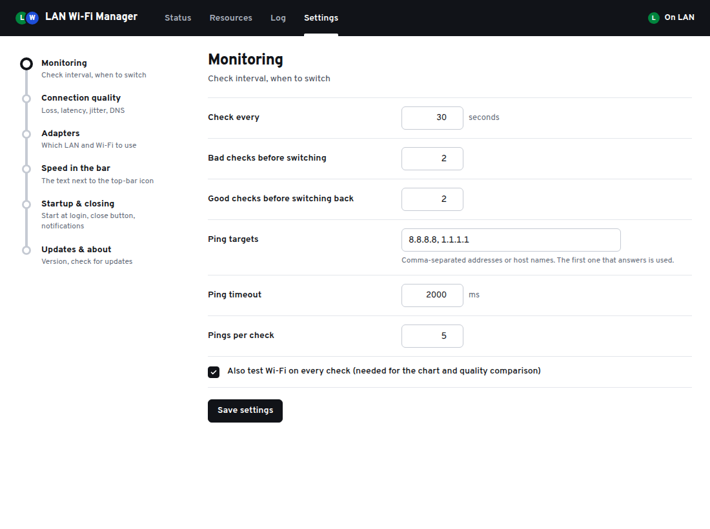

Ethernet connected but no internet? Switch to Wi-Fi automatically.
LAN Wi-Fi Manager tests the internet through your cable and through your Wi-Fi. When the LAN stops working, your computer moves to Wi-Fi by itself, and moves back when the LAN is healthy again. Free for Windows and Ubuntu, with a macOS preview.
The cable stays plugged in and both adapters stay connected. Only the route priority changed, so the switch is instant.
When the cable's internet answers again, traffic returns to it. Quit the app and the system's own priority comes back.
An example of one failover with the default settings, using the app's own log messages. Times and values are illustrative.
At a glance
LAN Wi-Fi Manager is a free app for Windows and Ubuntu, with a macOS preview, that keeps you online when your computer is connected by both Ethernet (LAN) and Wi-Fi at the same time.
| Name | LAN Wi-Fi Manager |
|---|---|
| What it does | Automatic Ethernet-to-Wi-Fi failover. It tests the internet through each adapter, makes Wi-Fi the preferred route when the LAN fails or gets poor, and switches back when the LAN recovers. Both adapters stay connected. |
| When it helps | When your Wi-Fi has its own route to the internet: a phone hotspot, a second provider or a separate router. It doesn't combine the two connections. |
| Systems | Windows 10 and 11. Ubuntu 24.04. macOS 13.6 or later as a preview, not yet tested on a real Mac. |
| Price | Free for personal and work use. No ads, no paid tier, no account. |
| Licence | Freeware, closed source. Please don't redistribute modified copies. |
| Latest version | 2.2.0, released (release notes). First public release: 1.5.0, . |
| Files | Windows: portable .exe, 1.0 MB, not code-signed. Ubuntu: .deb package, 7.0 MB. macOS: universal .dmg, 10.8 MB, not signed or notarized. |
| Privacy | No telemetry. It contacts only your ping targets, your adapters' DNS servers, and the GitHub API to check for updates, which you can turn off. |
| Developer | bilal-nasr on GitHub. Questions and bug reports go to GitHub issues. |
How it keeps you online
Your computer is plugged in by cable and connected to Wi-Fi at the same time. The app watches both and decides which one should carry your traffic.
It helps when your Wi-Fi has its own route to the internet: a phone hotspot, a second provider or a separate router. If both come from the same router and that router or the provider is down, there is nothing better to switch to.
- It tests each link through its own adapter
- Every 30 seconds by default it sends 5 pings through the LAN adapter and 5 through the Wi-Fi adapter, to 8.8.8.8 or 1.1.1.1 (you can change the targets), and checks that DNS answers on each.
- It rates each link Good, Degraded or Down
- Down means no replies at all. Degraded means 50% packet loss or more, average latency above 500 ms, or DNS not answering. A jitter limit can be turned on too, and every limit can be changed.
- It switches only when that helps
- A dead LAN moves your traffic to Wi-Fi after 2 bad checks in a row. A poor LAN moves it only if the Wi-Fi is actually better. After 2 good LAN checks in a row it moves back.
- It changes priority, not connections
- Both adapters stay connected the whole time. The app only changes which one your system prefers, so the switch is instant, and it hands the priority back to the system when you quit. You can also pick Use LAN, Use Wi-Fi or Toggle by hand.
| System | How it switches | What you need |
|---|---|---|
| Windows 10 and 11 | Sets the interface metric of the two adapters; quitting turns automatic metrics back on. | Administrator rights (the app asks when it starts). |
| Ubuntu 24.04 | Lowers the Wi-Fi device's IPv4 route metric through NetworkManager (IPv6 is left alone). The change is temporary: a reboot undoes it. | Nothing extra. NetworkManager allows it for the signed-in user. |
| macOS 13.6+ | Swaps the order of the Ethernet and Wi-Fi network services. | A small helper, installed once with an administrator password. |
See which line carries your traffic
The Status tab draws your two connections as a route map: the thick line is the one in use, and every switch is marked where it happened.






What else it does
It sits in the tray on Windows and in the top bar on Ubuntu and macOS, so you can leave it running.
- Live speed in the taskbar
- Download and upload speed next to the tray icons on Windows, and in the top bar on Ubuntu and macOS.
- Resources tab
- A CPU core strip and history, plus memory and swap, GPU, network and disk. Each opens a process list where you can end a task.
- Manual modes
- Use LAN, Use Wi-Fi and Toggle, from the window or from the tray or top-bar icon.
- Runs in the background
- Closes to the tray or top bar, starts at login if you want, notifies you when it switches, and keeps a daily log.
- Explains every switch
- The log tab lists each check that failed and why, for example packet loss or DNS not answering.
- Updates
- The Windows app updates itself. On Ubuntu and macOS it tells you when a new version is out and opens the download. You can turn update checks off.
Download and install
Version 2.2.0, released 8 October 2026. Free for personal and work use. Older versions and release notes are on the releases page.
Windows 10 and 11Portable, nothing to install
- Run the file. It is a single portable program.
- Allow administrator rights. Windows only lets admin programs change which connection it prefers.
- If SmartScreen says Windows protected your PC, choose More info, then Run anyway.
Why the warning: the exe is not code-signed, so Windows doesn't recognise the publisher. If you want to check the file, compare its hash: in PowerShell, Get-FileHash .\LanWifiManager.exe.
SHA-256 34a23cb292fff5443c71e789f59b09b45faf2f337bbac76dcaab0e06f55bb23a
Ubuntu 24.0464-bit .deb package
- In the folder you downloaded it to, install it:
sudo apt install ./LanWifiManager_2.2.0_amd64.deb- Open LAN Wi-Fi Manager from the app list. Switching needs no password: NetworkManager allows it for the signed-in user.
SHA-256 f5ebcc0d155e167046ddcbcd1cc4baf435429bb62c33aab0e0feac2e9476ee64
macOS 13.6 or laterUniversal .dmg, Apple silicon and IntelPreview: not yet tested on a real Mac
- Drag the app to Applications and open it.
- When macOS says it could not verify the app, choose Done, then go to System Settings → Privacy & Security and choose Open Anyway. You need to do this again after each update.
- Allow the one-time switching helper when the app asks. This needs an administrator account.
Why the warning: the app is not signed or notarized by Apple. Monitoring and the speed display work without the helper; only switching needs it. Please report anything that doesn't work in an issue.
SHA-256 f8752bddc85452346eac26d614838fe0efd8676b6dde32253a1fe6291b913069
GitHub adds Source code (zip / tar.gz) links to every release. They contain the README, the screenshots and this website, not the app's source code, which isn't published. Download the file for your system instead.
Compared with what you already have
Your system can already prefer one connection over another. The gap is the moment the cable stays connected but the internet behind it stops working.
| Option | What it does well | Where it falls short for this job |
|---|---|---|
| Windows automatic metric | Prefers Ethernet while its link is up, and moves to Wi-Fi when the cable is unplugged or the link drops. | When the cable stays connected but the router, the modem or the network behind the cable stops working, Windows may keep sending traffic over Ethernet. It doesn't compare the quality of the two links. |
| Setting metrics by hand | Set-NetIPInterface, or the adapter's IPv4 settings, makes the connection you choose the preferred one. | It is a fixed setting. It doesn't notice a failure and doesn't switch back when the LAN recovers. How to do it. |
| NetworkManager on Ubuntu | When its connectivity check is on, it can lower the priority of a device without internet, so the other one takes over. | The check runs every 5 minutes by default, is one web request, sees only "internet or not", and doesn't show which link carries traffic. Details. |
| macOS service order | Uses the first service in your list and falls back to the next one when the link drops. | When Ethernet keeps its address but the internet behind it is gone, people report the fallback is slow or doesn't happen. |
| Dual-WAN router | Fails over for every device on the network, without software on each computer. | Costs a router and setup time, and both internet connections have to reach that router (wired, USB modem or Wi-Fi uplink, depending on the model). |
| Speedify | A bonding VPN service (a free tier with a data cap, paid plans for regular use) that fails over smoothly on many platforms. | Your traffic goes through Speedify's servers, and regular use needs a paid plan. |
| LAN Wi-Fi Manager | Tests both links through their own adapters, switches by route priority with both kept connected, and switches back. Free, no account, no proxy. | Only helps when the Wi-Fi has its own route to the internet (hotspot, second provider or separate router). One computer at a time. With default settings a switch takes up to about a minute. No bonding. Closed source and unsigned, and the macOS build is untested. |
Privacy
No telemetry, no accounts, no data collection.
The app only connects to:
- Your ping targets, 8.8.8.8 and 1.1.1.1 by default (you can change them), to test each connection.
- Your adapters' own DNS servers, for the DNS check.
- The GitHub API, to check for updates. You can turn this off in Settings.
Settings and logs stay on your computer: %AppData%\LanWifiManager on Windows, ~/.config/LanWifiManager on Ubuntu, and ~/Library/Application Support/LanWifiManager on macOS.
Wi-Fi name on Windows. Since Windows 11 24H2, reading the Wi-Fi network's name and signal counts as location access, so it appears as "Network Command Shell" under Privacy & security → Location. The app asks first, reads those details only while its window is open (plus once at startup and when reconnecting Wi-Fi), never reads GPS or coordinates, and sends nothing anywhere. You can change this in Settings → Adapters.
The macOS helper can only swap the order of two network services. To remove it, use Settings → macOS → Remove, or run sudo rm -f /private/etc/sudoers.d/lanwifimanager /Library/PrivilegedHelperTools/lanwifi-helper.
Questions
Something else? Ask in a GitHub issue.
Can I use Ethernet and Wi-Fi at the same time?
Yes. Windows, Ubuntu and macOS all let both connections stay connected at once. The system sends your traffic through the one with the better priority, which is normally Ethernet, and the other one waits. Being connected to both does not add their speeds together; that needs bonding software or a router built for it. More on how the priority works.
Why does my computer keep using Ethernet when it has no internet?
The system ranks connections by their link, not by whether the internet behind them works. While the cable is plugged in and the adapter has an address, Ethernet keeps the better priority, even if the router, the modem or the network behind the cable has stopped working. Windows may show "No internet" and still send traffic over Ethernet. LAN Wi-Fi Manager tests the internet through each adapter and moves the priority to Wi-Fi when the LAN stops answering. That helps when your Wi-Fi reaches the internet a different way, such as a phone hotspot, a second provider or a separate router. If both come from the same router and that router or the provider is down, there is nothing better to switch to.
How quickly does it switch to Wi-Fi?
Usually within about a minute of the LAN failing, with the default settings. It checks every 30 seconds and switches after 2 bad checks in a row. In Settings, Monitoring, you can check as often as every 5 seconds and switch after a single bad check. The switch itself is immediate, because the Wi-Fi is already connected.
Does it switch back to Ethernet when the LAN works again?
Yes. In Auto mode it moves back once the LAN has passed 2 good checks in a row (you can change the number), so a flaky cable does not make it bounce back and forth. When you quit, it hands the priority back to the system: on Windows it turns automatic metrics back on (so a metric you had set by hand is not kept), and on Ubuntu and macOS it restores the original order. That happens only while the setting to give the priority back on quit is on, which it is by default.
Does it combine Ethernet and Wi-Fi for more speed?
No. It is failover, not bonding. Your traffic goes through one connection at a time, and the app only decides which one.
Do calls and downloads survive a switch?
Not reliably. The app changes route priority only; it does not bond links, proxy or tunnel traffic. Connections that were open on the dead link usually have to reconnect; it doesn't keep sessions alive the way a bonding VPN can.
What counts as a bad connection?
A link is Down when none of its pings get a reply, and Degraded at 50% packet loss or more, average latency above 500 ms, or when DNS does not answer through it. A jitter limit can be turned on too. A Down LAN always leads to a switch. A Degraded LAN leads to a switch only when the Wi-Fi is Good. All of these limits can be changed in Settings.
Why does Windows SmartScreen warn about it, and is it safe?
SmartScreen shows "Windows protected your PC" because the exe is not code-signed, as it does for most new unsigned programs. Whether to trust it is your call: it is free but closed source, so you are trusting the author; there is no telemetry and it only contacts the addresses listed under Privacy. You can compare the file's SHA-256 hash with the one listed on this page. To run it, choose More info, then Run anyway. The app asks for administrator rights because changing which connection Windows prefers needs them.
My Wi-Fi turns off when the cable is plugged in. Will it still work?
Yes, but switching is instant only when the Wi-Fi is already connected. On Windows, if the Wi-Fi is disconnected when a switch is needed, the app first tries to connect it to your saved network (choose it in Settings, Adapters). Some Wi-Fi drivers have an option such as "Disable Upon Wired Connect", and the Windows policy "Minimize the number of simultaneous connections" can also keep Wi-Fi disconnected while Ethernet is up; turn those off if you can.
Does it work on Ubuntu and macOS?
Yes on Ubuntu 24.04; on macOS 13.6 or later it is a preview that has not yet been tested on a real Mac. Ubuntu gets a .deb package; it switches through NetworkManager and needs no password for the signed-in user. The macOS build is not signed or notarized, so macOS asks you to allow it under Privacy & Security, and switching needs a small helper that is installed once with an administrator password.
Does it collect any data?
No. There is no telemetry and no account. The app only contacts your ping targets (8.8.8.8 and 1.1.1.1 by default), your adapters' own DNS servers for the DNS check, and the GitHub API to look for updates, which you can turn off. Settings and logs stay on your computer.
Is it free and open source?
It is free, but not open source. You can use it at home or at work, with no ads or paid tier. The source code is not published, and the GitHub repository holds only the README, screenshots, this website and releases.
Guides
How to do it by hand, what the built-in settings can and can't do, and where the app fits.
- Switch from Ethernet to Wi-Fi automatically on Windows 11 and 10Why Windows stays on a dead cable, how interface metrics work, and the manual fix.
- Ubuntu: use Wi-Fi when Ethernet has no internetNetworkManager route metrics,
nmcli, and the connectivity check. - Using Ethernet and Wi-Fi at the same timeWhich one your computer uses, and how to prioritize Ethernet over Wi-Fi on Windows, Ubuntu and Mac.